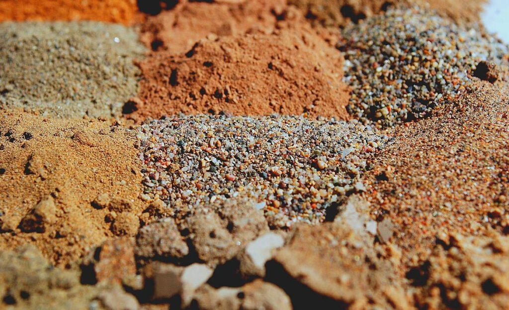

Farklı toprak tipleri, özellikleri ve bunların sınıflandırılması.
Toprak tipleri, çeşitli özelliklere göre sınıflandırılır ve farklı bölgelerde farklılıklar gösterebilir. Bazı yaygın toprak tipleri şunlardır:
Kumlu Topraklar: Büyük partiküllü yapıları olan topraklardır. Bu topraklar suyu iyi geçirir ve hava dolaşımına izin verir, ancak suyu tutma kapasiteleri düşüktür.
Kil Topraklar: Küçük partiküllü yapıları olan topraklardır. Bu topraklar genellikle suyu iyi tutar, ancak hava dolaşımı ve su geçirgenliği daha düşüktür.
Tınlı Topraklar: Kum ve kil karışımıdır. Su tutma ve drenaj özellikleri genellikle dengelidir, bu da bitki yetiştirme için uygun bir ortam sağlar.
Humus Topraklar: Yüksek oranda organik madde içeren topraklardır. Bu topraklar genellikle verimlidir ve bitki yetiştirmek için uygun bir ortam sunar.
Toprak Sınıflandırması:
Topraklar genellikle yapılarına, minerallerine ve oluşum süreçlerine göre sınıflandırılır. Toprak sınıflandırmasında, toprağın farklı katmanları ve bileşenleri göz önünde bulundurulur. Bu sınıflandırmalar, tarım, inşaat, jeoloji ve diğer alanlarda toprağın kullanımıyla ilgili kararlar alınmasına yardımcı olur.
Toprak isimlendirmesi genellikle yerel koşullara ve coğrafi faktörlere göre değişir. Toprağın mineral içeriği, yapısal özellikleri ve organik madde miktarı gibi faktörler, toprak tiplerinin belirlenmesinde ve isimlendirilmesinde önemli rol oynar.
Bilgi Almak İçin Tıkla